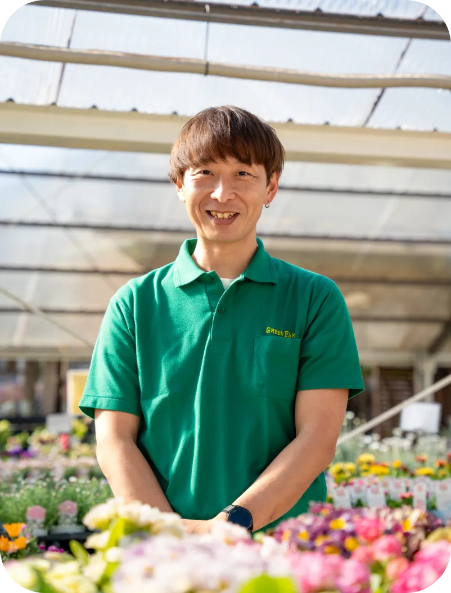
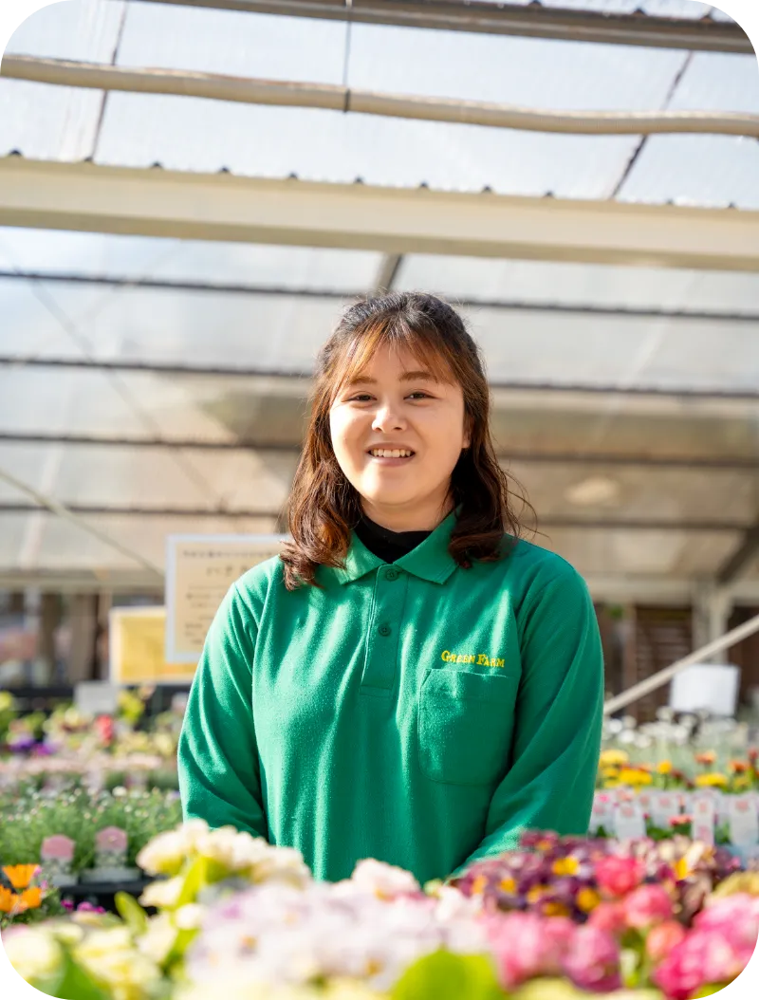
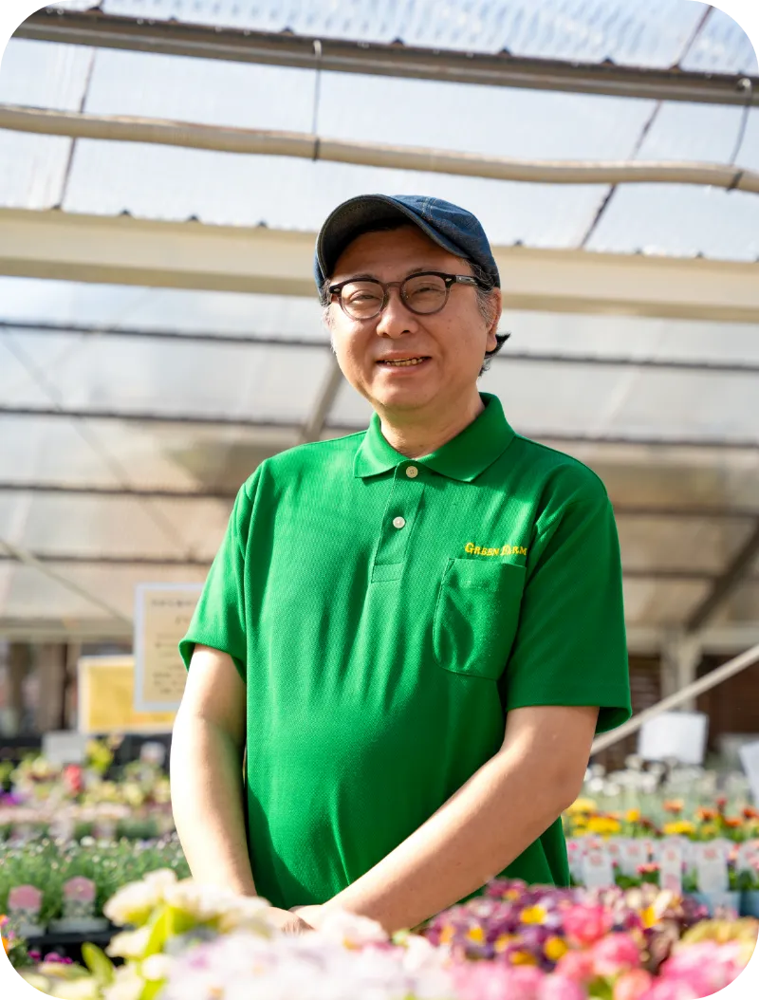

GREEN FARM RECRUIT
太陽のもと、
花や緑と一緒に
新たな成長を
SCROLL
私たちが目指すもの
花と緑を通じて、
地域社会に感動と豊かさを広げる
私たちは、「花と緑」を通じて、“育てる”をキーワードに歩んでいます。
- 「植物」を育て、「事業」を育てる
- 「仲間」や「お客様」を育てる
- 「自分」を育てる
効率化やデジタル化がどんどん進む社会の中でも、
太陽のもと、花や緑に囲まれた環境で、新しい自分を発見して欲しいと考えています。
仕事を通じて成長を実感しながら、かけがえのない瞬間を私たちと一緒に創りましょう。
01WORK
あなたの「好き」や「得意」を活かせるフィールドがあります。
02PERSON
それぞれの『好き』が重なり合って、グリーンファームの個性を創っています。

中途入社
植物担当バイヤー
I.S
仕事も遊びも全力。
答えがないからこそ、植物は面白い。

新卒入社
専門学校出身
植物担当
N.M
お客様の「やりたい」を形に。
植物のプロとして寄り添い続ける。
中途入社
金沢美術工芸大学出身
造園営業
S.S
お客様の理想を形にし、
何年先も頼られる存在へ。

中途入社
日本大学出身
店長
N.D
30年経っても尽きない「緑」への探究心。
お客様の笑顔が原動力。
あなたの経験と感性が
グリーンファームの新しい色になります。
03COMPANY
グリーンファームについて
04IDEAL PROFILE
グリーンファームが求める人財
05RECRUITMENT
INFORMATION
応募要項
| 勤務地 | 神奈川県 横浜市 |
|---|---|
| 仕事内容及び アピールポイント |
グリーンファームは、花と緑を通じてお客様の暮らしに彩りと癒しを届ける園芸専門店です。 接客・販売（育て方アドバイス、ギフト提案） 売場づくり（ディスプレイ、POP作成、季節ごとの演出） 植物管理（水やり、剪定、植え替え、品質チェック） スタッフ・パートのシフト管理、育成、マネジメント 商品企画（オリジナル培養土、肥料、企画植物、ギフト商品など） 仕入れ先との交渉や新商品の導入 イベントやワークショップの企画・運営 |
| 求める人材 |
明るく笑顔で、元気に挨拶のできる方、丁寧な接客ができる方を募集しています。 高校卒業以上の方。 GW、母の日、年末の繁忙期に連勤できる方。 繁忙期は土日祝日出勤多いです |
| 求める人材 |
植物・園芸が好きな方 人と接することが好きで、チームで働ける方 新しい企画や商品づくりに挑戦したい方 普通自動車 運転免許ある方歓迎 普ある程度のPCスキル ワード、エクセル SNS投稿や動画編集など得意な方 |
| アピールポイント |
お客様に直接「ありがとう」と言っていただけるやりがいのある仕事です あなたのアイデアを売場や商品に反映できます 植物や園芸の知識が自然と身につき、暮らしにも活かせます キャリアアップ制度あり（契約社員→ 正社員） 地域のお客様に愛される店舗で長く働けます 車、バイク通勤OK |
| 勤務時間・曜日 |
9:00-18:30 休憩90分 休日シフト制 |
| 勤務形態 |
変形労働時間制 シフト制 |
| 休暇・休日 |
年間 105日 シフト制 GW、母の日、年末は出勤日数増えます |
| 勤務地所在地 |
〒236-0042 神奈川県 横浜市 金沢区 釜利谷東 |
| 勤務地備考 |
下記のグリーンファーム各店への異動の可能性あり グリーンファーム戸塚深谷店 横浜市戸塚区 グリーンファームあい菜フローラ店 横浜市瀬谷区 |
| アクセス |
最寄り駅：京浜急行 金沢文庫駅 徒歩15分 |
| 試用期間 |
試用期間あり 試用期間：6か月 試用期間中の労働条件：同条件 |
| 待遇・福利厚生 |
社会保険完備 厚生年金、雇用保険、健康保険、労災保険 交通費支給 社内規定あり 月額15,000円まで 社内割引制度あり |
| 勤務地 | 神奈川県 横浜市 |
|---|---|
| 仕事内容 |
グリーンファームは、花と緑を通じてお客様の暮らしに彩りと癒しを届ける園芸専門店です。
|
| 求める人材 |
明るく笑顔で、元気に挨拶のできる方、丁寧な接客ができる方を募集しています。 高校卒業以上の方。 GW、母の日、年末の繁忙期に連勤できる方。 繁忙期は土日祝日出勤多いです |
ENTRY
あなたの個性を咲かせる職場。
ご応募を心よりお待ちしております！